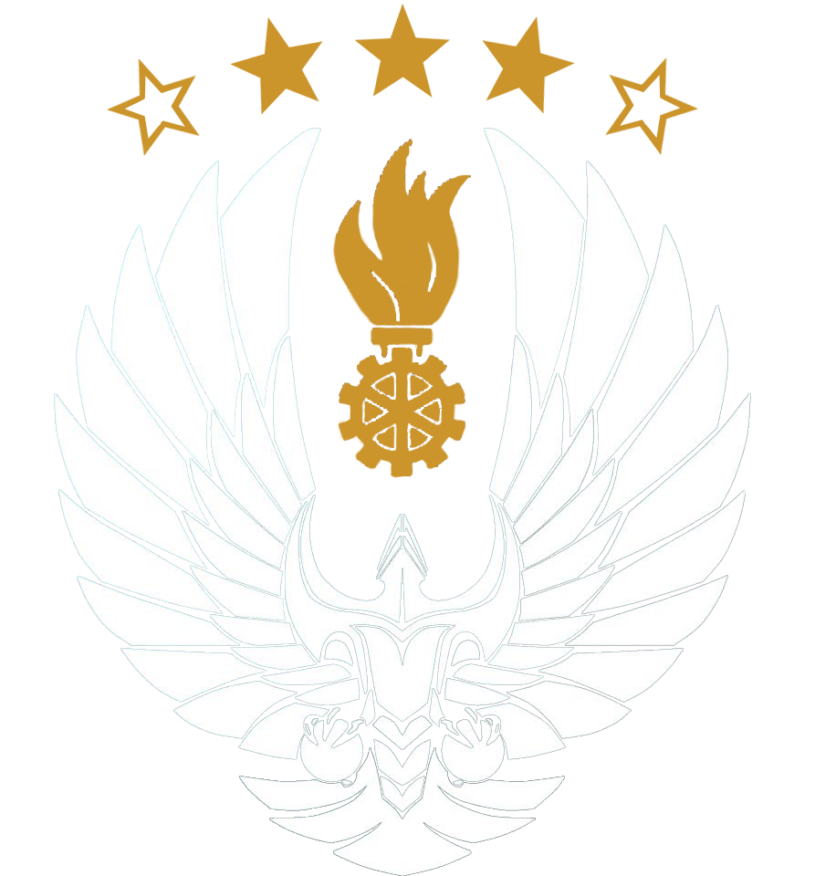

<header class="header">
  <div class="nav">
    <button class="btn collapse-nav" (click)="openNav()">
      <fa-icon class="btn-icon" [icon]="['fas', 'bars']"></fa-icon>
    </button>

    <div class="navbar-container" *ngIf="isNavVisible">
      <button class="btn collapse-nav" (click)="closeNav()">
        <fa-icon class="btn-icon" [icon]="['fas', 'times']"></fa-icon>
      </button>
      <ul class="navbar">
        <li class="nav-item" routerLink="/stopwatch" (click)="closeNav()">Stoppuhr</li>
        <li class="nav-item" routerLink="/draw" (click)="closeNav()">Ziehen</li>
        <li class="nav-item" routerLink="/history"
          [ngClass]="{'disabled': !isAuthenticated}"
          (click)="closeNav()">Tagebuch</li>
        <li class="nav-item" routerLink="/auth" *ngIf="!isAuthenticated" (click)="closeNav()">Einloggen</li>
        <li class="nav-item" routerLink="/auth" *ngIf="isAuthenticated" (click)="onLogout()">Ausloggen</li>
      </ul>
    </div>
  </div>
  <picture class="logo">
    
  </picture>
</header>

<div
  class="backdrop"
  [style.display]="isNavVisible ? 'block' : 'none'"
  (click)="closeNav()">
</div>
